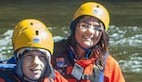
Our purpose is to satisfy your sense of adventure. Kittens and Puppies not included
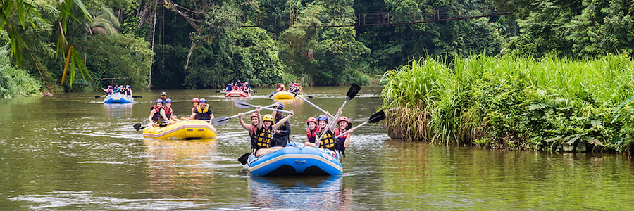

Our purpose is to satisfy your sense of adventure. Kittens and Puppies not included
This is your sign to sign up for trip to a place like no other. Contact Us now and you too can be a Pioneer.
| Area | Companion | Experience level | Price |
|---|---|---|---|
| Grass Fields | ADA* | None | $1,000.00 |
| Rocky Desert | ADA* | None | $1,500.00 |
| Northern Forest | ADA* | 2 trips | $2,000.00 |
| Dune Desert | ADA* | 5 trips | $3,000.00 |
| Forest Lake | ADA* | 3 trips | $1,750.00 |
| Titan Forest | ADA* | 5 trips | $3,000.00 |
| Blue Crater | ADA* | 3 trips | $2,000.00 |
| Southern Forest | ADA* | 4 trips | $2,500.00 |
| Western Dune Forest | ADA* | 1 trip | $1,750.00 |
| *Note: ADA is our new personal instance of the Artificial Directory and Assistant. | |||
Our first trip location has open and relatively flat fields. There are some interesting rock formations and the view from the clifside is to die for.
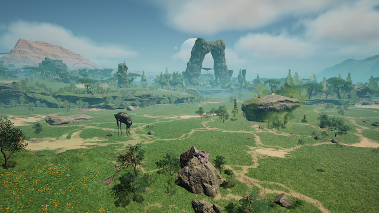
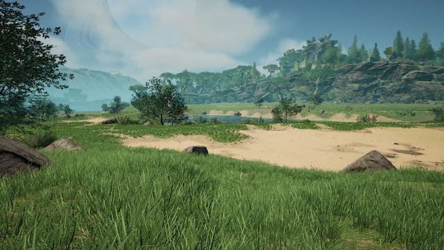
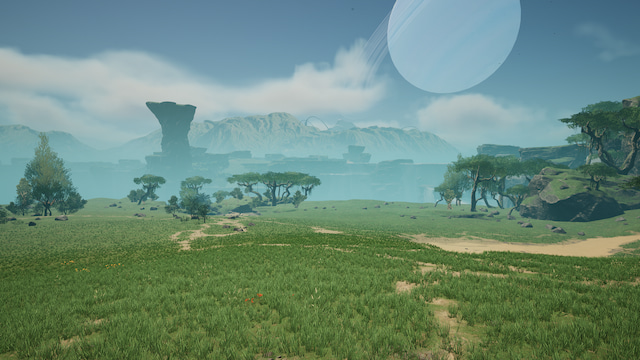
Located next to the sea, the weather and sights makes for a unique experience. Enjoy the local food of nuts is an added bonus
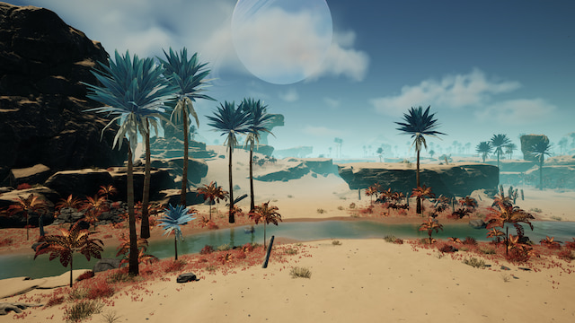
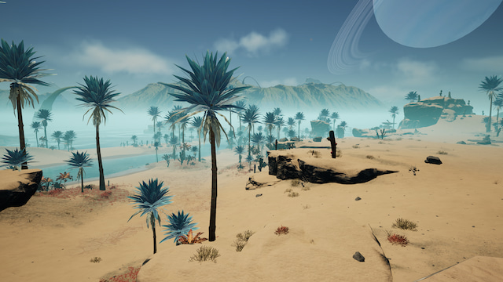
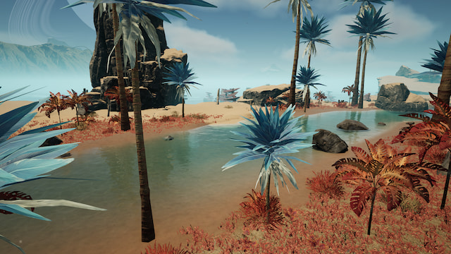
A lush forest with plenty of animal life. A nature lover's paradise really.
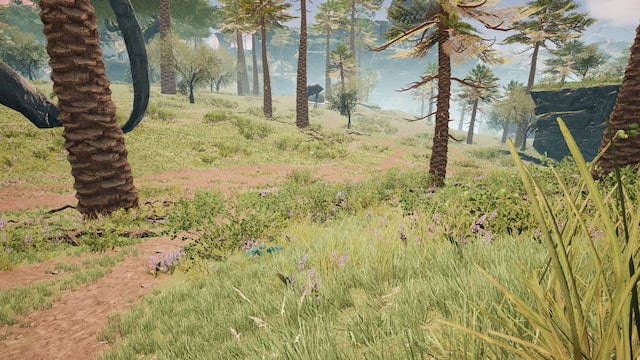
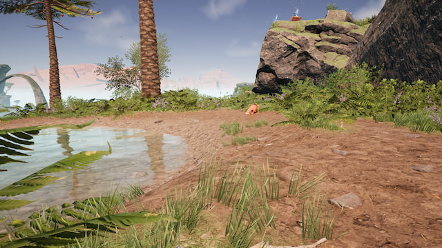
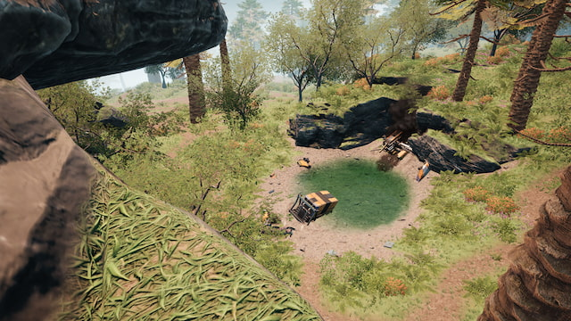
For our more experienced pioneers, we have the dune desert. Plenty of adventure here with a lake on a plateau
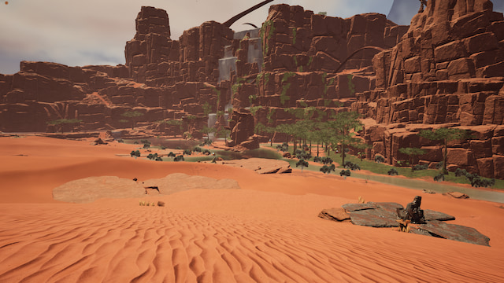
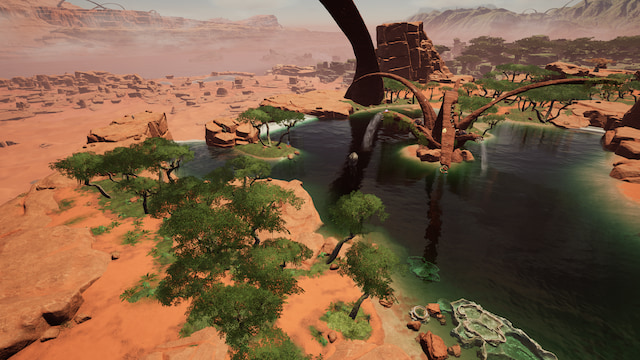
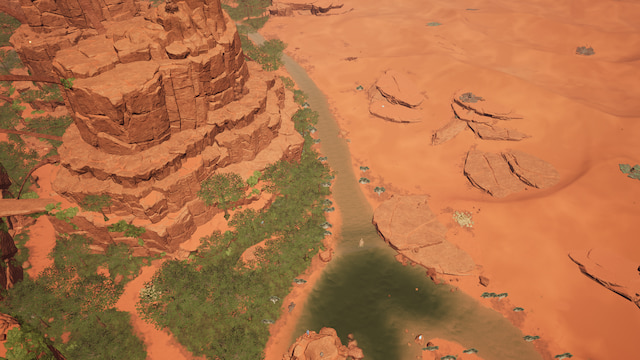